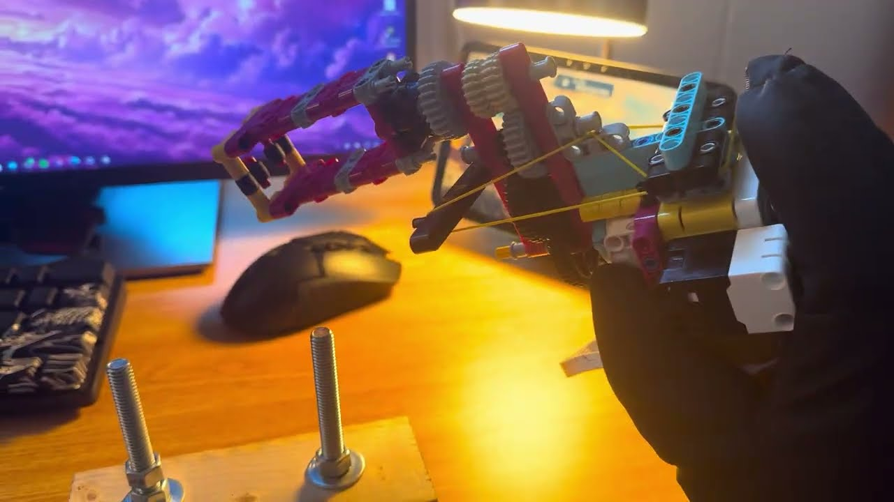

For this project I designed a one-handed LEGO SPIKE Prime tool that lets an astronaut on a spacewalk (EVA) move a nut from one bolt to another. Thinking like a human factors engineer meant designing around the space suit: astronauts wear stiff, bulky gloves, keep one hand on the spacecraft, and anything they let go of floats away for good. The tool had to unscrew a nut, hold onto it, and screw it onto the other bolt, working in either the right or the left hand, with ski gloves standing in for space gloves.
The tool is held in one gloved hand. A row of gears runs along the arm out to a magenta and yellow head at the far end. The head fits down over the nut and spins to unscrew it, keeps hold of the nut while I move over to the second bolt, then spins again to screw it on. The test board is a block of wood with two bolts, and the video below shows the tool moving a nut from one bolt to the other.